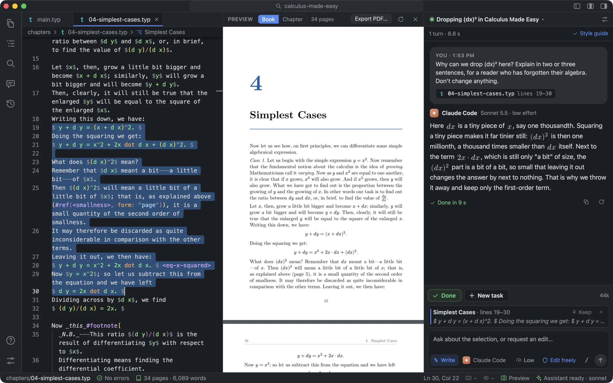
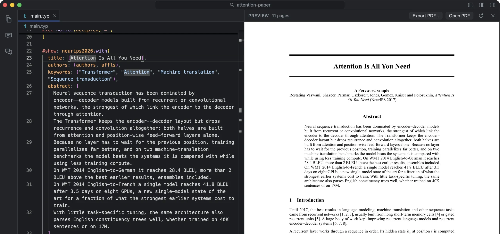
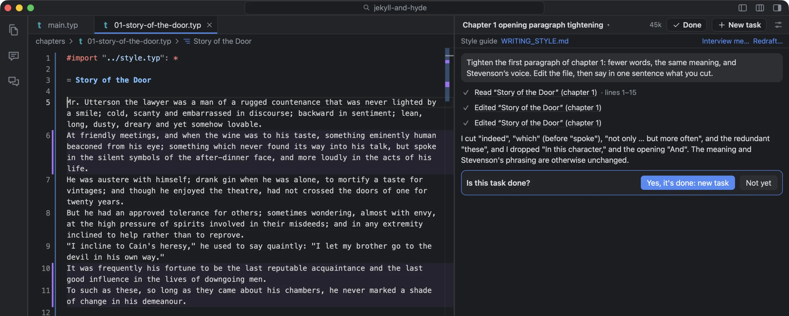
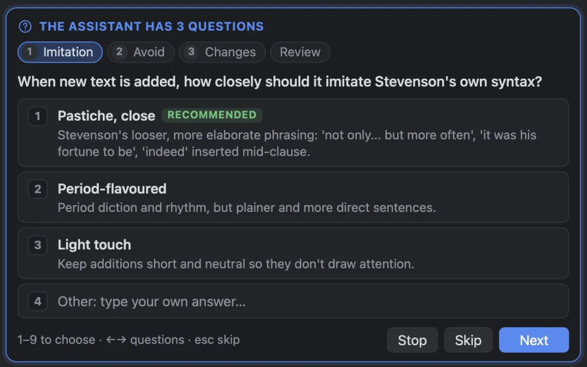
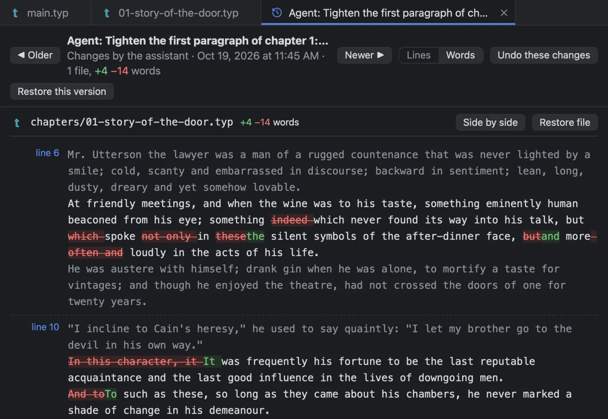
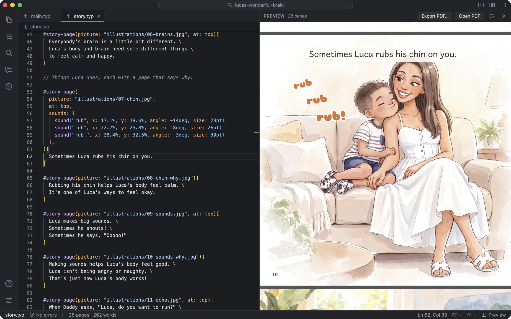

Write in plain text. Watch it become a book.
Foreword is a Mac app for writing books, papers and picture books in Typst. The typeset pages update beside your words as you type, and a writing assistant reads, explains and edits with you, showing every change it makes.
Version 0.4.0FreemacOS 13 or laterApple Silicon

Bring the assistant you already use
It's a program on your Mac, signed in with your own account. Pick one in Settings, or from the chat, with its model and how hard it thinks. Or just ask: “switch me to Claude Code”. Each conversation is its own task, and several can run at once.
The pages as they'll print, while you type
Foreword typesets the book from what you've typed, saved or not, and redraws only the pages in view. In a 491-page book, a change shows up in about a tenth of a second.
- Click a passage in the pages to go to its source.
- Errors are underlined where they are, explained in plain words.
- Export the PDF when you want it. Nothing to compile by hand.
- A 700-page book stays light, and keeps your place.

An assistant that edits, and shows its work
Select a passage and ask about it, or ask for a change. The assistant reads the chapters it needs, follows your book's style guide, and edits the files themselves, in plain sentences, never shell commands.
- Lines it changed are marked until you rewrite them.
- Ask answers in the chat and changes nothing; Plan talks a change through first.
- Options gives three versions of a passage to pick from.
- When it needs you to decide, it asks in a panel, with answers to pick.
- Before a command runs, it says what it does. An “always” is a rule you can undo.
- Ask it to change a setting, like “make the text bigger”, and it does.

A style guide, written with you
Every book gets a short guide to how it's written (voice, tone, the words it uses) that every request to the assistant follows. Answer a few rounds of questions about your book, and the assistant writes it from your answers.
- Or start from a template made for your kind of book.
- Or have it drafted from the chapters you've written.
- It learns from how you rewrite the assistant's text.
- Redraft it any time: the rules you wrote stay.

Every version, and what changed in it
History saves a version as you work and around every assistant change, on a timeline coloured by who made each one. Click a version to see what changed, line by line or word by word, then undo just that change or put the whole book back.
- Name a version, like “Draft sent to my editor”.
- Already use Git? Source Control commits, pulls and pushes.

Novels, textbooks, picture books and papers
Start from a template at the page sizes printers use in the US, the UK and Europe, and Asia. Papers start from IEEE, ACM, NeurIPS, CVPR, AAAI, ACL, Springer LNCS, arXiv, AMS or APA.
- Or open a finished sample: Jekyll and Hyde, Calculus Made Easy, Luca's Wonderful Brain…
- Picture books set their words on full-page pictures.
- A programming book whose code examples run.

Made for the whole job of a book
Review comments
Comment on passages as an editor would, then have the assistant address them, each change kept or undone on its own.
Code that runs
Examples in Python, JavaScript, R, Julia, Ruby, Lua, Perl and shell run from the book, with their real output set beneath.
Covers and printing
Design a print cover with the spine worked out from the page count, check the files, and order through Mixam.
E-books
Export an EPUB for Apple Books, Kobo, Google Play and Kindle: reflowing text for prose, every page as typeset for picture books and papers.
New to Typst?
Typst is plain text with a little markup. Typst basics opens beside your book and takes about five minutes.
Familiar keys
A command palette, Go to File, tabs and shortcuts as in VS Code, formatting on save, wrapping at a column with rulers, and a window for each book.
Find anything
Search every chapter at once and replace across the book, see the whole book in Contents with each chapter's sections and words, and go to a chapter by its number.
A colour for each book
As VS Code's Peacock does for a folder: the title bar, icons and status bar wear the book's colour, so you can tell its window from the rest. A book with a Peacock colour keeps it.
A tour to start
The first time you open a book, a minute's tour shows you around the window, one part at a time. Help ▸ Take the Tour runs it again.
Start your book tonight
Free for the Mac, with the samples to try it on. It keeps itself up to date.
Download for MacVersion 0.4.0macOS 13 or laterApple Silicon
Or build it from source
brew install rust node tinymist git clone https://github.com/jgeewax/foreword.git cd foreword && npm install && npm run app